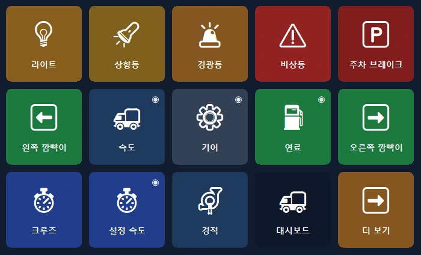
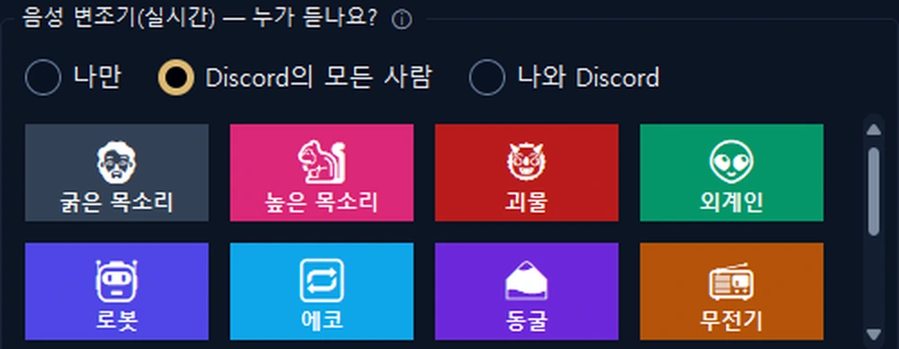
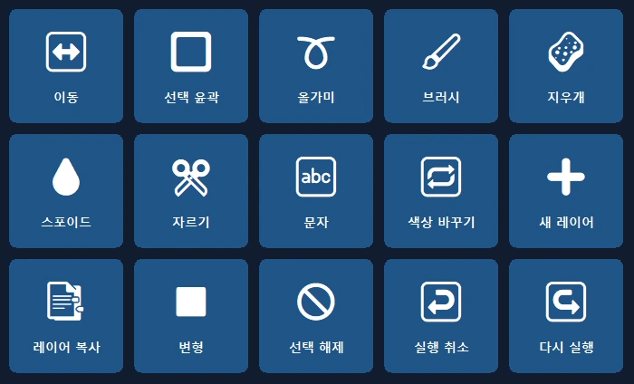
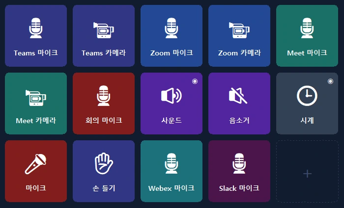

휴대폰이 PC의 컨트롤 패널이 됩니다.
원터치 단축키, OBS, Discord, Spotify, 게임 패널. USB, Wi‑Fi 또는 모바일 데이터로 연결하며 종단 간 암호화됩니다.
트럭 대시보드를 이제 휴대폰에서.
속도, RPM, 연료, 실감 나는 경고등을 실시간으로. 트럭 조작은 한 번의 탭으로.
- 🚦진짜 대시보드속도, 제한 속도, RPM, 연료, 도착 시간. 경고등이 게임과 똑같이 켜집니다.
- 🕹원터치 조작전조등, 주차 브레이크, 크루즈 컨트롤. 한 번의 탭으로 왼쪽이나 오른쪽을 봅니다.
- 📳설정 불필요게임을 실행하면 휴대폰이 준비된 패널을 제안하고, 이후에는 매번 자동으로 전환합니다.

한 손으로 방송을 관리하세요.
비싼 장비 대신 휴대폰으로. OBS, 효과음, Discord, 음악을 한 화면에서.
- 🎬OBS 제어장면, 녹화와 방송, 타이머를 버튼 위에서 바로.
- 📳사운드 패널과 음악준비된 사운드를 재생하고 Spotify와 앱별 음량을 한 화면에서 조절하세요.
- 🎙보이스 스튜디오자연스러운 여성, 남성, 어린이 목소리 또는 내 목소리로. Discord 마이크도 한 번에 음소거.


프로그램을 열면 패널이 준비되어 있습니다.
Photoshop, Premiere Pro, After Effects, Illustrator, DaVinci Resolve, Blender, Figma, VS Code의 공식 단축키를 바탕으로 한 패널.
- ✨설정 불필요프로그램이 앞으로 오면 휴대폰이 해당 패널을 제안하고, 이후 자동으로 전환합니다(Pro).
- ⌨정확한 단축키도구, 레이어, 실행 취소, 마커. 각 프로그램의 표준 단축키 그대로.
마이크를 한 번의 탭으로.
단축키를 설정하지 않아도 Teams, Zoom, Meet, Webex, Slack에서 마이크를 끕니다. 회의 창이 뒤에 있어도 됩니다.
- 🎙그 프로그램만Windows가 회의 프로그램의 마이크만 음소거합니다. 다른 프로그램은 그대로입니다.
- 🔴상태가 항상 보입니다마이크가 꺼져 있는 동안 버튼 표시등이 빨간색으로 켜집니다. 무료 버전에도 포함됩니다.

책상 위에서 가장 유용한 화면.
준비된 레이아웃으로 1분 만에 시작하세요. 프로그램의 실제 로고가 자동으로 표시됩니다.
보조 화면
PC 화면을 휴대폰에서 보고 터치 마우스와 키보드로 사용하세요.
앱별 음량
프로그램마다 음량을 따로 조절. 헤드폰 ↔ 스피커도 한 번의 탭으로.
스마트 페이지
페이지가 앞에 있는 프로그램을 따라갑니다. 타이머, 폴더, 여러 단계 동작도 지원합니다.
어디서나 연결
같은 Wi‑Fi가 필요 없습니다. 모바일 데이터로도, 여러 PC에서도 작동합니다.
암호화된 클라우드 백업
계정 없이 레이아웃을 암호화해 저장하고 새 PC에서 되돌립니다.
개인정보 보호
계정, 광고, 추적이 없습니다. 버튼은 내 기기에만 남습니다.
1분이면 준비 완료.
프로그램 설치
Windows용 PanelDeck을 무료로 다운로드하고 실행하세요.
QR 스캔
휴대폰 앱이 QR 코드로 몇 초 만에 연결됩니다.
탭하세요
준비된 레이아웃을 고르거나 나만의 버튼을 만드세요.
한 번 결제로 평생 사용.
구독, 광고, 추적이 없습니다. 모든 업데이트가 포함됩니다. Google Play에서 국가별 현지 가격을 보여 줍니다.
무료
- USB, Wi‑Fi, 모바일 데이터로 연결
- 첫 페이지에 버튼 6개
- 단축키, 미디어, 프로그램 실행, Discord, 타이머
PanelDeck Pro
출시 기념가, 이후 6.99달러. 7일 무료 체험.
- 탭 6개, 폴더와 버튼 무제한
- 보조 화면, 음량 슬라이더, 실시간 정보
- 트럭 패널, 보이스 스튜디오, 프로그램을 열면 나타나는 패널
- 암호화된 클라우드 백업
알아 두면 좋은 것
계정이 필요한가요?
아니요. PanelDeck은 계정을 요구하지 않으며, 버튼은 내 기기에만 남습니다.
집 밖에서도 되나요?
네. 같은 Wi‑Fi가 없으면 휴대폰이 모바일 데이터를 통해 종단 간 암호화로 연결합니다.
어떤 게임을 지원하나요?
Euro Truck Simulator 2와 American Truck Simulator를 완전히 지원합니다. 레이싱 및 비행 시뮬레이터용 실시간 패널은 베타입니다.
iPhone 버전이 있나요?
현재는 Android만 지원합니다. iPhone과 iPad 버전을 계획하고 있습니다.
Windows에 'Windows의 PC 보호' 메시지가 나오면 어떻게 하나요?
'추가 정보' → '실행'을 클릭하세요. 자세한 내용은 설치 가이드에 있습니다.